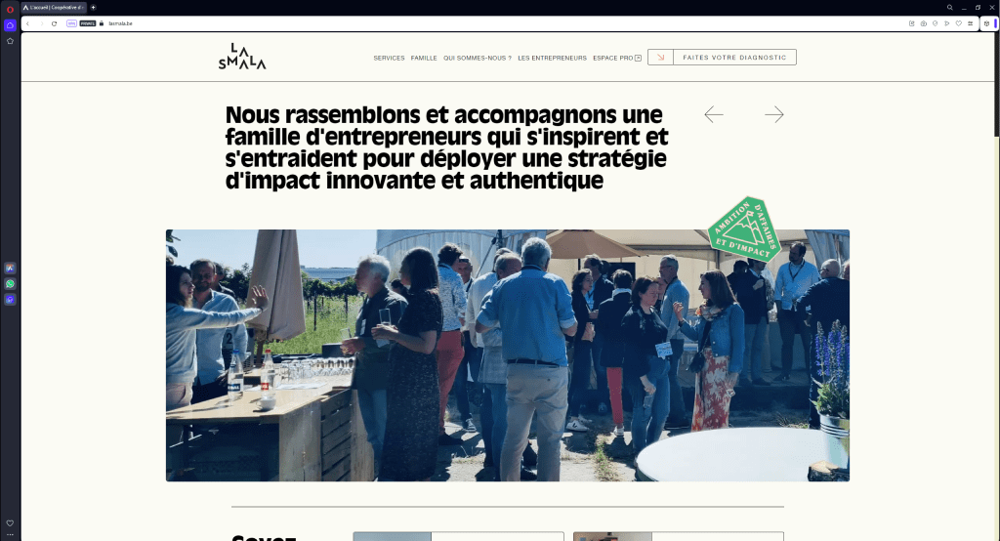

So, you are looking for one EPIC candidate?

Who am I?
I'm Jonathan, a thirty-years-old guy from Theux, near Liège, passionate about web development. I want to join a team to work collaboratively and enhance my skills by working on awwward-winning projects.
I love building things and making them look beautiful on any resolution. I go the extra mile to provide optimized code for SEO, performance, and accessibility.
But words are what they are, so why don't you take a look at my latest piece of work instead of reading a boring text? Of course, feel free to run a Lighthouse audit. 📈
Skills I have
- I use HTML5, CSS3, and JavaScript daily, focusing on delivering the best user experience. I write W3C-valid markup and adapt easily to the CSS tech or framework (Sass, Less CSS, Tailwind, etc.) and/or methodology (BEM, RSCSS, or whatever) used in the project. I love working on CSS animation.
- I already use Git (mostly with GitHub Desktop) and I feel cool when using CLI.
- Diving into the Svelte.js framework (rewriting a full-stack web app MVP written in VanillaJS and Node.js using SvelteKit).
- Some knowledge in backend development (using Node.js with Express with MongoDB), ability to make CRUD app and REST API.
- I have a keen eye, and I use Figma daily.
Are you still reading?
Let's meet in real life! I can visit your agency and have a coffee to discuss further.
Let's meet!